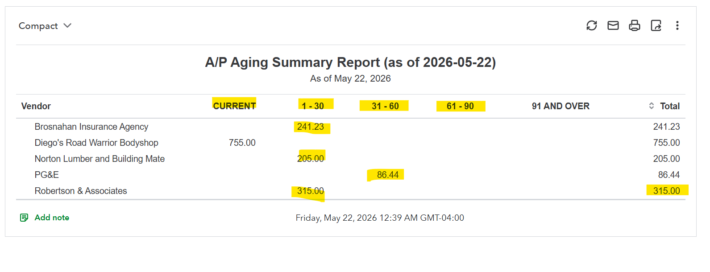

Purpose
Review money the company owes vendors and identify bills that are current or overdue.
Simple Example
The A/P Aging report shows vendor balances by aging period, including current, 1–30 days, 31–60 days, and total balances.
Simple Bookkeeping Decision Rule
Pay attention to due dates and aging columns. Prioritize overdue vendor bills and bills that are important for business operations.

Analysis
I reviewed the A/P Aging Summary Report as of May 22, 2026. The report shows total accounts payable of $1,602.67. The aging totals are $755.00 current, $761.23 in 1–30 days, and $86.44 in 31–60 days. Vendor balances include Brosnahan Insurance Agency at $241.23, Diego’s Road Warrior Bodyshop at $755.00, Norton Lumber and Building Materials at $205.00, PG&E at $86.44, and Robertson & Associates at $315.00.
Result
The business can plan vendor payments based on urgency. The 1–30 day and 31–60 day balances should be reviewed to avoid late fees and maintain good vendor relationships.